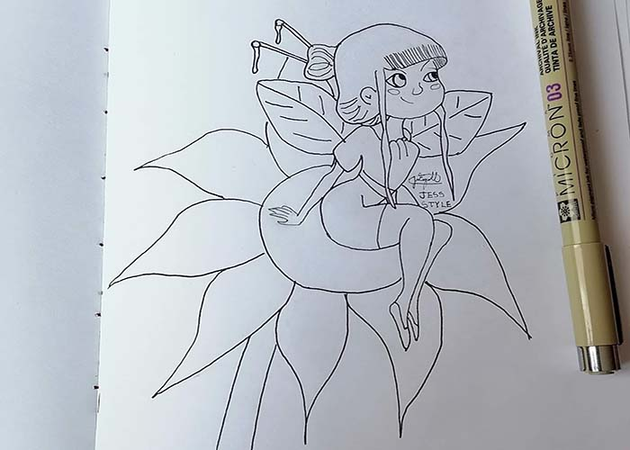

Ilustraciones tradicionales y digitales con estilo cartoon
LA ILUSTRACIÓN
La ilustración en el mundo del arte es la “estampa, grabado o dibujo que adorna o documenta un libro”. Esa es la definición de la RAE, pero una más completa podría ser la siguiente: La ilustración es un dibujo, pintura u obra impresa de arte que explica, aclara, ilumina, visualmente representa, o simplemente decora un texto escrito, que puede ser de carácter literario o comercial.
TIPOS DE ILUSTRACIÓN
Ilustración tradicional: es el tipo “clásico” de ilustración, en el que se dibuja y pinta a mano.
Ilustración digital: la ilustración digital, en cambio, usa las nuevas tecnologías (a través de diferentes tipos de software) para la producción de imágenes.